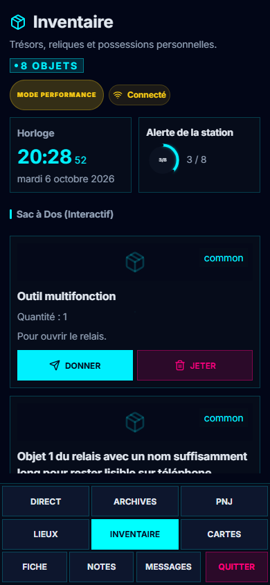

T4 · J1 intégré
Application réelle et campagne fictive de Varn. Inventaire, Cartes et fiche aux quatre formats. Chaque geste passe par le vrai serveur de synchronisation du banc.

Les cartes scellées restent anonymes ; les dons d’objets attendent le meneur, ceux de cartes attendent leur destinataire. La fiche de ces captures utilise les réserves de Dune dans le décor fictif de Varn.